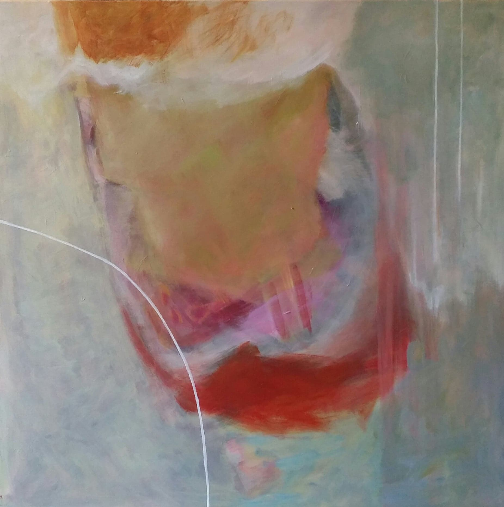

utbildning
- Gerlesborgsskolan i Stockholm 79-81
- ABF´s konstskola i Umeå 78-79
om konstnären
Jag heter Eva Strinnö och är född och uppvuxen i Svedala. Jag är sedan många år bosatt i Södra Åby, en liten rundby på Söderslätt.
Att teckna och måla har alltid varit ett sätt för mig att utforska såväl min omgivning som mitt inre. Ateljén är en plats där måleriet rör sig mellan det föreställande, över likheter in i abstraktioner. Ibland låter sig måleriet vila i det bekanta, igenkännandet. Ibland gör det en resa in i det undermedvetna, där färg och form söker svar på och samband med det outgrundliga tillstånd som vi kallar Livet.
